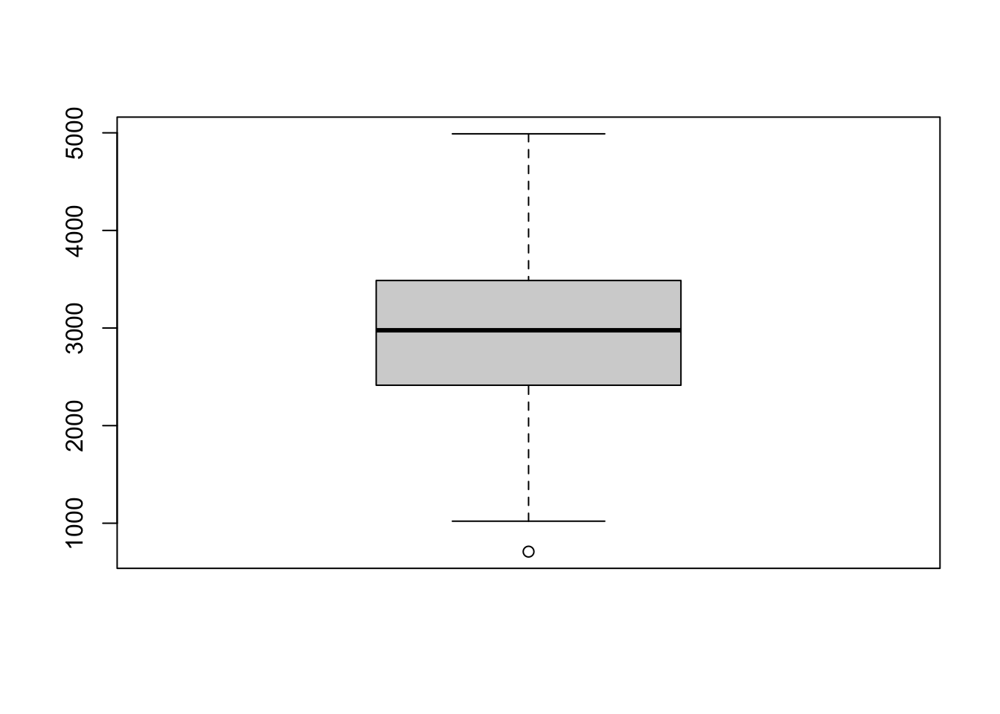
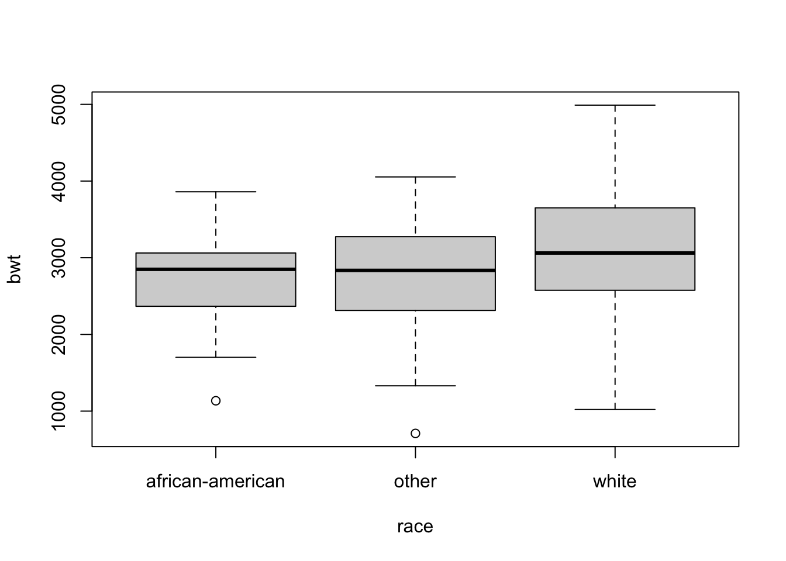
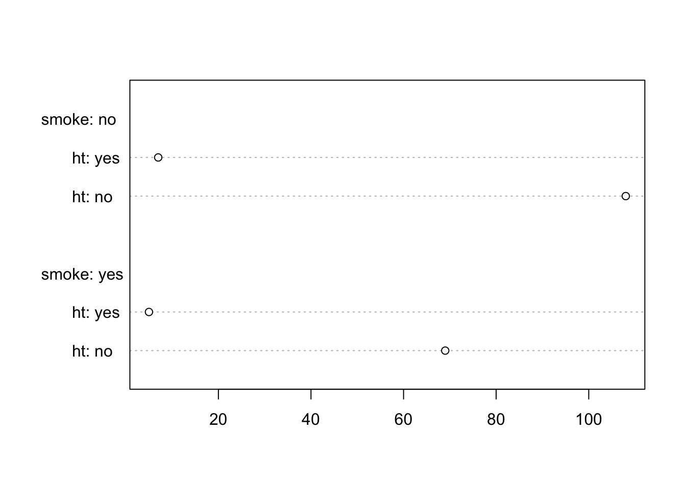

Task 1: Descriptive statistics
We consider a dataset on risk factors associated with low infant birth weight (modified from the MASS R package). First, we set the working directory and read the dataset:
The birthwt dataset contains the following columns:
age: mother’s age in yearslwt: mother’s weight in poundsrace: mother’s racesmoke: smoking status during pregnancyht: history of hypertensionftv: number of physician visits during the first trimester of pregnancybwt: birth weight in grams
## age lwt race smoke ht ftv bwt
## Min. :14.00 Min. : 80.0 african-american:26 no :115 no :177 Min. :0.0000 Min. : 709
## 1st Qu.:19.00 1st Qu.:110.0 other :67 yes: 74 yes: 12 1st Qu.:0.0000 1st Qu.:2414
## Median :23.00 Median :121.0 white :96 Median :0.0000 Median :2977
## Mean :23.24 Mean :129.8 Mean :0.7937 Mean :2945
## 3rd Qu.:26.00 3rd Qu.:140.0 3rd Qu.:1.0000 3rd Qu.:3487
## Max. :45.00 Max. :250.0 Max. :6.0000 Max. :4990Exercise
Determine the scale of measurement for each variable:
- nominal,
- ordinal,
- count (discrete numeric)
- or continuous?
Representation of a single variable
Continuous variable
Numerical description
Measures of location
## [1] 2944.587## [1] 2977Measures of dispersion
## [1] 729.2143## [1] 531753.5## [1] 709 4990## [1] 1073Sample quantiles
## 0% 25% 50% 75% 100%
## 709 2414 2977 3487 4990## 20% 80%
## 2341.8 3629.0Sample coefficient of variation (measure of dispersion relative to location; dimensionless).
## [1] 0.2476457Sample mean and sample median both are a measure of location, and sample standard deviation and interquartile range both are a measure of dispersion. The main difference between these measures is that sample mean and sample standard deviation are more affected by outliers than sample median and interquartile range, respectively.
Graphical description
Continuous variables are usually displayed in a histogram, a boxplot, or a dot plot (1D scatter plot).
A histogram groups values into predefined intervals (‘’binning’’) and represents counts in these intervals:
Advantages:
- multimodality and skewness easy to see
Disadvantages:
- 2D representation of 1D data (difficult to group)
- representation depends on interval width
A boxplot represents summary statistics depending on sample quantiles:
- median
- quartiles
- ‘’fences’’
- lower fence: at smallest observation larger than \(q_{0.25} - 1.5\cdot IQR\)
- upper fence: at largest observation smaller than \(q_{0.75} + 1.5\cdot IQR\)
- outliers (values outside fences, if any)

Advantages:
- 1D representation of 1D data (can be grouped)
- outliers are easily spotted
Disadvantages:
- multimodality not visible
- sample size not visible
A (continuous) dot plot shows individual data points along the x-axis, while scattering (‘’jittering’’) values along the y-axis to avoid overplotting.
Advantages:
- Shows the actual data!
- ‘’almost 1D’’ representation of 1D data (can be grouped)
Disadvantages:
- only adequate for small datasets
Discrete variable
Generally, a discrete variable is summarized by counting number of datapoints in each category; this information can be displayed directly as a table (either absolute or relative frequencies) or graphically as a barplot.
## race
## african-american other white
## 26 67 96## race
## african-american other white
## 0.1375661 0.3544974 0.5079365- Discrete numeric variables (i.e., count data) can be further summarized numerically, similar to continuous variables. In particular we can compute their mean, variance/standard deviation, median (or, more generally, quantiles), minimum/maximum, and interquartile range.
- Rather than using the coefficient of variation, the index of dispersion is often computed (ratio of sample variance to sample mean). It is 1 for Poisson distributed data; when the dispersion index is \(>1\), data are called overdispersed and for a dispersion index \(<1\), they are called underdispersed.
- Count variables with many categories are sometimes displayed as if they were continuous (e.g., via a histogram or boxplot). However, a histogram and a barplot are not the same!
Exercise
Classify the frequency of physician visits according to its dispersion index.
Labelling
It is important to use meaningful axis labels and titles, such as in the following examples:
Exercise
Summarize each variable in the birthwt dataset appropriately. Use adequate x/y labels and a title.
Relationships between two variables
Both continuous
Two continuous variables are best shown in a scatterplot:
The degree of linear association between two continuous variables can be expressed by the empirical correlation coefficient \(r\in[-1,1]\):
## [1] 0.09031781One continuous, one discrete
The values of non-numeric discrete variables divide the dataset into different groups. For each of these groups, summary statistics can be computed.
For graphical display, boxplots and dot plots are well suited since they can be placed side by side:

Both discrete
Two discrete variables are best summarized via a joint frequency table. To avoid potential confusion between variables with the same set of possible values, use named arguments:
## smoke
## ht no yes
## no 108 69
## yes 7 5A graphical representation of 2 discrete variables is less commonly used than a tabular representation. One possibility is the mosaic plot:
Alternatively, a small multiples arrangement of dotcharts (in base R, the default labelling is unfortunate for both these possibilities).
colnames(tab) <- paste0('smoke: ', colnames(tab))
rownames(tab) <- paste0('ht: ', rownames(tab))
dotchart(tab)
… or stacked/grouped barplots (this is difficult to do in base R, therefore one best uses a dedicated R package, e.g. ggplot2):
Exercise
Represent the following relationships appropriately:
raceandhtsmokeandageftvandlwt
Data post-processing
Numerical transformations
Sometimes a variable is transformed numerically (often, log-transformed) before it is represented numerically or graphically. For illustration, we consider the Animals dataset from the MASS R package (body and brain size for different animal species):
Exercise
Make sure you understand which summary statistics commute with a monotonously increasing data transformation like the log-transform, and which ones don’t (commutation means that if \(T(X)\) is a statistic and \(f\) a data transformation, then \(f(T(X)) = T(f(X))\)).
Subsetting
Only a subset of data might be relevant for a particular analysis. Use function subset to create a sub-dataset (see tutorial “Manipulating data frames”).
For example, we might want to consider only the mothers with hypertension:
## age lwt race smoke ht ftv bwt
## 13 22 95 other no yes 0 2751
## 51 22 120 white no yes 1 3100
## 93 19 235 white yes yes 0 3629
## 102 19 184 white yes yes 0 3756
## 106 25 241 african-american no yes 0 3790
## 133 34 187 african-american yes yes 0 1135
## 134 25 105 other no yes 0 1330
## 139 24 132 other no yes 0 1729
## 140 21 165 white yes yes 1 1790
## 181 26 154 other no yes 1 2442
## 188 17 142 african-american no yes 0 2495
## 189 21 130 white yes yes 3 2495Categorisation
Numeric variables (continuous or count) can be categorized into ordinal variables. Unfortunately, there is no such function in base R, but the categorization can be done manually using functions findInterval and factor:
idx <- findInterval(birthwt$ftv, c(-0.5,0.5,1.5))
catftv <- factor(c("never","once","several")[idx], ordered = TRUE)
head(catftv)## [1] never several once several never never
## Levels: never < once < severalFurther exercises
- Represent the following relationships appropriately:
smoke,lwtandbwtageandbwtof mothers smoking during pregnancysmokeandbwtof mothers over 30 that never went to a doctor during first trimester of pregnancy